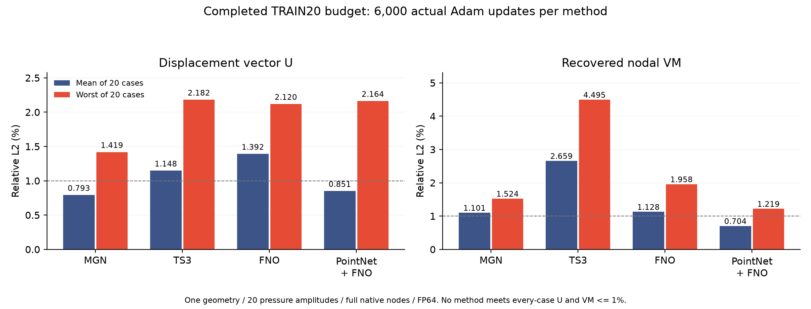
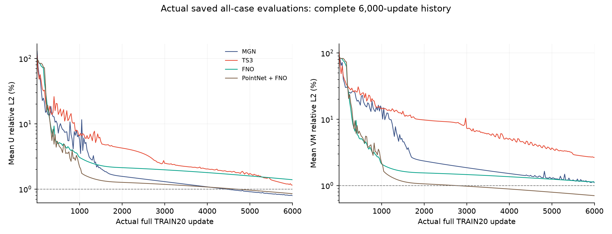

01
验收 / 总结 / 介绍
已发布MGN、TS3、FNO和PointNet编码FNO的20例完成结果；四种方法各完成6000次实际更新并通过独立CPU审核。1000例实验仍在进行中，C06保持进行中。
已发布MGN、TS3、FNO和PointNet编码FNO的20例完成结果；四种方法各完成6000次实际更新并通过独立CPU审核。1000例实验仍在进行中，C06保持进行中。
这部分是同一几何、20个压力幅值的TRAIN拟合，四种方法均未达到全20例位移与节点VM各≤1%。平均/最差为逐例相对L2的算术平均/最大值；TS3 p01的负VM保留原值。
四模型均已完成6000次全20例FP64更新并通过独立CPU审核；这是固定预算完成，未达到全部20例位移和节点VM各≤1%。
| 方法 | 主体参数 / 编码器参数 | 位移 U 相对 L2（平均 / 最差） | 节点 VM 相对 L2（平均 / 最差） | 负 VM 例数 |
|---|---|---|---|---|
| MGN | 985,540 / 0 | 0.7933% / 1.4188% | 1.1013% / 1.5244% | 0 |
| TS3 | 982,884 / 0 | 1.1484% / 2.1821% | 2.6594% / 4.4953% | 1 |
| FNO | 984,668 / 0 | 1.3923% / 2.1202% | 1.1278% / 1.9576% | 0 |
| PointNet → FNO | 984,668 / 81,760 | 0.8506% / 2.1636% | 0.7040% / 1.2193% | 0 |
平均/最差均为逐例相对L2，见完整定义与80条指标。
打开全部结果、实际曲线与FE/预测对照 ↗

MGN / TS3 / FNO / PointNet编码FNO的曲线、平均/最差误差与checkpoint
MGN / TS3 / FNO / PointNet编码FNO的曲线、平均/最差误差与checkpoint
固定同一小样本子集，记录两模型拟合表现与失败现象
尚未录入结果。首条交付后，链接固定保留在本页。
尚未录入；后续记录与每日更新一同追加。
正在读取记录…
已发布MGN、TS3、FNO和PointNet编码FNO的20例完成结果；四种方法各完成6000次实际更新并通过独立CPU审核。1000例实验仍在进行中，C06保持进行中。
这部分是同一几何、20个压力幅值的TRAIN拟合，四种方法均未达到全20例位移与节点VM各≤1%。平均/最差为逐例相对L2的算术平均/最大值；TS3 p01的负VM保留原值。